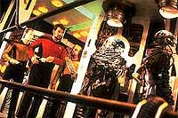
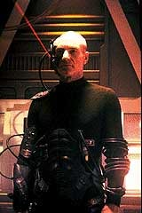
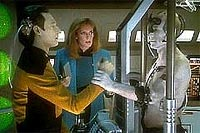
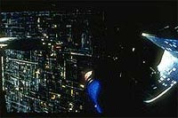
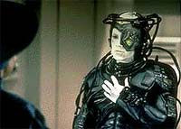
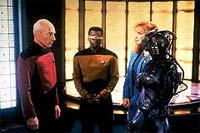
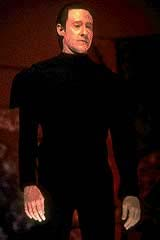
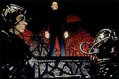
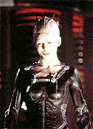

|
por
Fernando Penteriche
Ser colunista da Nova Gerao
e no escrever um artigo sobre os Borgs algo difcil. Eu
havia prometido a mim mesmo que no faria um artigo to bvio,
mas acabei no resistindo. O verdadeiro culpado de tudo o
Locutus, um bonequinho do alter-ego de Picard que fica sobre meu
CPU e est sempre me observando, parecendo dizer: escreva sobre
mim... resistir intil...
Ento, para alegria do Locutus e por desencargo de conscincia,
fiz o que prometi no fazer.
Antes de comear, um pouco de nostalgia. Apesar de ser f de Jornada
nas Estrelas desde os 12 anos (1988), at o ano de 1992 eu
nem sabia da existncia de Borgs. O problema que naquela poca,
sem Internet e sem grana para comprar revistas importadas como
Starlog e Cinefantastique (escassas em So Paulo naquele tempo),
ficava difcil saber o que estava rolando com a Nova Gerao
nos EUA, pois o que tnhamos de mais recente desta srie na TV
era o primeiro ano (um fato que perdurou at 1997). Mesmo notcias
sobre os filmes de cinema V e VI no eram encontradas to
facilmente. E clubes como Jetcom e Frota Estelar Brasil ainda no
me haviam sido apresentados.
Foi a que o saudoso programa dos domingos noite da Rede
Record "TOP TV" trouxe alguma luz no fim do tnel. O
programa, que era muito bom e cultuado, fez um especial sobre Jornada
nas Estrelas. Para alguns, foi a primeira chance de ver
trechos de episdios como "Yesterday's Enterprise",
"Q Who?" e "The Best of Both Worlds"
e ainda "Unification". Isso em 1993... Consegui a
fita de alguns destes episdios apenas em 1995, ou seja, passei
dois anos colhendo informaes em cards, fanzines e HQs
importadas de Jornada para descobrir mais sobre esses tais
Borgs. Quando consegui a fita, devo t-la assistido umas trs
vezes em seguida. A imagem estava terrvel, mas e da?
Pude ver "Q Who?", "I, Borg" e
principalmente "The Best of Both Worlds I & II"
aps 24 meses de ansiedade. Algum tempo depois a CIC lanou a
fita dos Borgs aqui no Brasil, comecei a adquirir as fitas seladas
importadas com os outros 170 e poucos episdios e da histria...
Meu Locutus aqui me olhando que o diga.
"We are the Borg"
 Quando
eles surgiram, em "Q Who?", mostraram a que
vieram. Os Borgs, seres que renem "o melhor de dois
mundos": biologia e tecnologia. Uma mente coletiva, onde no
existe o "eu" e sim o "ns". Se um
atingido, o outro j sabe como se defender, aproveitando a mente
nica que liga todos os Borgs em uma s coletividade. No
existe hierarquia, no existem indivduos, e no existe quem
possa resistir a eles. Resistncia intil. Voc ser
assimilado.
Este episdio da segunda temporada foi o que exerceu a maior
influncia no futuro da Nova Gerao. Escrito por
Maurice Hurley, marca a terceira apario de Q (John deLancie).
Mas a principal contribuio para a srie so os mais srdidos
viles at ento, os Borgs.
Os Borgs, cujo nome derivado de "cyborgs", surgiram
com a misso de serem o que os Ferengis nunca conseguiriam ser:
um inimigo mortal, sem o sentimento de remorso, que no aceita
argumentos, e virtualmente impossvel de ser derrotado.
A presena Borg vinha sendo indicada desde o episdio final da
primeira temporada, "The Neutral Zone". No
decorrer de "Q Who?", descobrimos que os Borgs
foram os responsveis pelo desaparecimento dos postos avanados
Romulanos mencionados naquele episdio. Na verdade, os Borgs em
si j deveriam aparecer neste episdio de final de temporada, e
a trama se estenderia pelo segundo ano da srie, mas a greve dos
roteiristas de Hollywood no final da dcada de 80 atrapalhou os
planos.
O oramento da Nova Gerao acabou restringindo o visual
dos novos viles. Originalmente Hurley os imaginava como uma raa
insectide, embora o conceito de colmia sobrevivesse para
tornar-se um opressivo grupo de mentes conhecido como coletividade
Borg. E a enorme nave, com um design cbico nico e uma primeira
apario marcante, contribuiu para que os Borgs ascendecem ao
topo da lista de raas inimigas preferidas pelos fs, justamente
como planejado.
Ao final de "Q Who?", a tripulao da
Enterprise, ainda meio que abalada com o primeiro contato
proporcionado por Q, percebe que, agora que os Borgs sabem da
existncia da Federao, no vai demorar para uma visitinha
acontecer. E essa visita catastrfica aconteceria uma temporada e
meia depois, no episdio final do terceiro ano, "The Best
of Both Worlds".
"I am Locutus of Borg"
 Este
espetacular episdio duplo (o primeiro na srie depois do
piloto) provavelmente a maior realizao da Nova Gerao.
O escritor do episdio, Michael Piller, estava procura de um
roteiro para o ltimo episdio do terceiro ano que contasse com
um gancho que prendesse o telespectador no perodo de hiato entre
as temporadas. Aproveitando que estava atrs de um outro bom
roteiro para a volta da raa de cyborgs, Piller criou uma histria
com os Borgs sequestrando Picard.
Como o roteiro pedia uma "abelha rainha" para a
Coletividade Borg, Piller encontrou a idia da abduo de
Picard. Porm, originalmente, ele estava com a inteno de
utilizar Data e Picard transformados em uma unidade Borg. A ltima
adio ao roteiro foi a histria da indeciso de Riker sobre
sua carreira.
Michael Piller costuma dizer que quando comeou a escrever, no
tinha a mnima idia de como o episdio iria acabar, e nem
sabia ainda se ele prprio estaria por l na prxima temporada.
Ele conta que Gene Roddenberry foi quem o assegurou no cargo,
dizendo que, agora que a srie estava entrando nos eixos, Piller
seria imprescindvel para o prximo ano.
Sobre "The Best of Both Worlds", desnecessrio
contar a trama (embora eu o faa mesmo assim, s para lembrar os
velhos tempos): um cubo Borg vem de encontro ao setor 001, o nosso
Sistema Solar, e ningum consegue det-lo. Para piorar a situao,
Picard assimilado, transformando-se no borg Locutus e liderando
a invaso, e a Enterprise a nica nave que pode deter o
imenso cubo.
Ao final da primeira parte, e com os trs meses de reprises antes
da concluso, boatos davam conta de que Patrick Stewart no
renovaria seu contrato com a Paramount. Os fs especulavam em
fanzines: a recm apresentada perosnagem Shelby seria a nova
primeira-oficial da Enterprise, agora sob o comando do capito
Riker? Picard morreria heroicamente? Shelby morreria ao salvar
Picard?
 Na
volta da temporada, todos os problemas solucionados. Picard
resgatado, e a interdependncia dos Borgs acaba por salvar a
Federao, graas ao esforo de Picard/Locutus e Data, ao
inserir um comando em uma subrotina Borg, o que causa um
mal-funcionamento e a autodestruio da gigantesca nave. A
comandante Shelby se despede para nunca mais voltar e Riker volta
a ser o Imediato de Picard.
 Sobre
os efeitos especiais, so bons para a poca, mas hoje em dia esto
completamente defasados. Qualquer episdio de ao de Voyager
tem mais efeitos especiais do que metade de uma temporada da Nova
Gerao. E por motivos econmicos, a batalha de Wolf 359 no
foi mostrada, apenas suas sequelas. No episdio-piloto de Deep
Space Nine, "Emissary", vemos uma sequncia
da mesma, e em "The Drumhead", da quarta
temporada, revelado que em Wolf 359 a Frota Estelar perdeu 39
naves, com a morte de aproximadamente 11 mil tripulantes.
"The Best of Both Worlds" obteve indicaes ao
prmio Emmy de melhores efeitos especiais e de melhor direo
de arte, e no ganhou. Porm venceu na categoria de melhor edio
de som e melhor mixagem sonora. A trilha sonora de Ron Jones
muito boa, e posteriormente foi lanada em CD.
"My name is Hugh"
O clamor por outro episdio com os Borgs aumentava todo ms, porm
a equipe de produo e o time de roteiristas estavam com um
dilema: como superar em qualidade um episdio como "The
Best of Both Worlds" e ainda fazer outro "borg-show"
sem ser repetitivo? A resposta foi simples: fazer um episdio
diferente dos anteriores, onde desta vez, a assimilao seria
inversa.
Assim como com a presena de Worf na srie os Klingons teriam
que serem olhados de outra maneira pelos fs, trazer um Borg a
bordo e explorar sua individualidade conseguiria fazer com que os
fs vissem um outro lado dos famosos inimigos. Ren Echevarria
escreveu e Robert Lederman dirigiu o episdio, que faria com que
os fs nunca mais pudessem olhar os Borgs da mesma maneira. O ttulo,
"I, Borg".
 No
episdio, a Enterprise encontra uma nave de patrulha Borg
acidentada em um planeta, com apenas um sobrevivente, um jovem
zango, designado como "3 de 5". Picard concorda em
trazer o Borg ferido a bordo aps insistncia da dra. Crusher. E
a que est a diferena do episdio para o anterior. Sem a
iminente ameaa de uma ataque, a tripulao da Enterprise
finalmente tem condies de observar e de se comunicar com um
Borg, e assim todos descobrem (principalmente Picard e Guinan) que
ele, agora rebatizado de Hugh por La Forge, no diferente
deles prprios. E se eles no so diferentes, como podem ser
inimigos?
 Com
Hugh a bordo da Enterprise e desconectado da Coletividade, sua
individualidade comea a surgir, graas insistncia da dra.
Crusher e de La Forge em no o verem como o "mal
encarnado". Ao final do episdio, um famigerado cubo Borg
aparece para resgatar o que restou da nave de explorao
acidentada, e Hugh decide partir com eles, levando sua
individualidade para dentro da coletividade. Como disse Picard,
"talvez isso seja mais poderoso do que qualquer vrus".
O que veio em seguida foi o episdio duplo "Descent",
na virada do 6 para o 7 ano. Em minha opinio, o mais
fraco episdio com Borgs da Nova Gerao, algo que com
certeza difcil de discordar. At o episdio de Hugh, os
Borgs havia sido tratados com imenso respeito pelos roteiristas.
Porm, em "Descent", temos uma colcha de
retalhos, que envolve desde o cientista prof. Stephen Hawking at
Lore, o irmo malvado de Data, passando por Hugh e a dra. Crusher
no comando da Enterprise. Um freak-show!
A pior sequncia
J que em "I, Borg" Hugh havia levado para a
Coletividade o "vrus" da individualidade, nada mais bvio
do que "Descent" mostrar Borgs completamente
diferentes dos que j havamos visto. Deixando a coisa bem ameaadora,
agora os Borgs do episdio no eram mais seres movidos pelo
impulso de assimilar toda e qualquer tecnologia. Eram apenas seres
bem malvados, comandados por Lore, o no-menos-malvado irmo gmeo
de Data. Para completar, uma inexplicada espaonave gigante (bem
diferente do padro cbico tradicional) estava a servio dos
zanges.
Em "Descent", a Enterprise se mete com um bando
de Borgs desgarrados comandados por Lore, mais conhecido por l
como o "One".
 Aps
Hugh levar o "vrus" da individualidade para a
coletividade, muitos Borgs ficaram extremamente confusos ao se
verem livres, e muitos grupos dissidentes se formaram. Lore (com o
chip de emoes de "Brothers" instalado e
ativado) encontrou um dos grupos de Borgs desgarrados, e serviu de
lder e inspirao para os mesmos. Claro, como Lore no
bobo, tratou de aproveitar a situao para tentar enganar Data e
traz-lo para o seu lado. No meio de tudo isto, temos a brilhante
participao do prof. Hawking atuando como ele mesmo em um jogo
de pquer no holodeck, que envolve Data, Isaac Newton e um
mal-caracterizado Albert Einstein (no gostei nada da maquiagem).
Temos tambm a dra. Crusher comandando a Enterprise na ausncia
da tripulao senior,
com muitos alferes e tenentes de primeira viagem prontos para
ajudar no caso da gigante nave utilizada pelos Borgs resolver
atacar.
 Hugh
aparece, liderando um grupo anti-Lore, e diz a Riker que a atitude
de Picard, devolvendo-o aos Borgs como um indviduo, foi a pior
coisa que poderia acontecer. Ao final do episdio, com Lore
derrotado, Hugh assume a liderana do grupo de Borgs-indivduos.
Picard estava certo, foi pior do que qualquer vrus. Muitos Borgs
no estavam preparados para serem indivduos, e um caos
generalizado deve ter ocorrido na coletividade. Mas a julgar pelo
prximo captulo desta saga, o filme para cinema "Jornada
nas Estrelas - Primeiro Contato", o caos no foi to
grande assim, pois o que vemos l a volta dos Borgs em seu
estado bruto, e com um elemento novo e extremamente incoerente
introduzido pelo quarteto Rick Berman, Brannon Braga, Ron Moore e
Jonathan Frakes: a Rainha Borg.
A Rainha da incoerncia
Seis anos aps "The Best of Both Worlds", os
Borgs voltam a atacar a Federao. Contra ordens da Frota, a
Enterprise segue para a Terra e com seus conhecimentos da
coletividade, Picard consegue destruir o cubo e salvar o dia. Porm
uma pequena nave esfrica Borg escapa e volta no tempo para
tentar assimilar os humanos do sculo 21, e assim impedir o que
no futuro exista a Federao. Desnecessrio dizer que a novssima
Enterprise-E tambm volta no tempo e impede o plano Borg.
Michael Okuda (o homem da cronologia de Jornada) deve ter
ficado de cabelos em p quando soube que Rick Berman havia
decidido que alm da apario dos Borgs no segundo filme para
cinema da Nova Gerao, "Jornada nas Estrelas -
Primeiro Contato", teramos na histria uma volta no
tempo estilo "Jornada nas Estrelas IV", e ainda
envolvendo um personagem como Zefram Cochrane. Neste filme, um
sucesso de pblico e crtica, os verdadeiros Borgs de "Q
Who?" e "The Best of Both Worlds" esto
de volta, trazendo ainda consigo a Rainha Borg, interpretada por
Alice Krige.
A maquiagem tambm muda, dando um salto na qualidade. Agora os
zanges tm um aspecto mais sombrio, e as marcas deixadas pela
assimilao so mais visveis. O engraado que nas cenas
de flashback com Locutus, Patrick Stewart utiliza a nova
maquiagem, e no a da poca dos Borgs da TV.
 A
Rainha Borg uma contradio, como bem disse Data. Se a
coletividade formada por milhares de mentes, sem um centro nico
de comando, mostrar um indivduo como uma espcie de lder Borg
uma grande contradio que fere tudo o que j conhecamos.
Claro que para um filme de cinema como esse, ainda mais com Borgs,
a presena de uma insinuante Rainha mais um motivo para chamar
o pblico (e nesse filme as iscas para o pblico so muitas:
nova Enterprise, um relacionamento entre o andride Data e a
Rainha Borg, sequncias de batalha, Picard e Worf discutindo no
trailer, novos uniformes, a chance de ver o primeiro contato dos
humanos, e por a vai). No roteiro, a desculpa para inserir a
nova Borg no soa bem clara, pois segundo ela, "quem uma
contradio voc, Data, um andride que quer ser
humano", ou "sou o comeo, o fim. Eu sou o Borg",
"eu trago ordem ao caos" e frases do gnero, com o
intuito de no explicar nada ao f, e ainda confundi-lo mais.
Ao final do filme, o plano Borg sabotado por Picard e a Rainha
praticamente desintegrada, vindo a morrer. Achei interessante a
meno de que no sculo 21, os Borgs ainda esto no quadrante
Delta, algo que seria muito, mas muito explorado na srie Voyager,
que cansou de encontrar os Borgs (inclusive a prpria Rainha por
duas vezes) por l. A apario da primeira esfera Borg tambm
gera curiosidade. Existiro outras naves Borgs com mais formatos
alm destes dois? As respostas esto em Voyager. Assista "Dark
Frontier" e "Unimatrix Zero" para
conferir.
Os Borgs cumpriram seu papel na Nova Gerao.
Ultrapassaram de longe os Ferengis, como era a proposta inicial, e
hoje em dia to populares quanto os Klingons. Dos novos viles
de Jornada, apenas Q tem uma popularidade to grande (e Q
s vezes nem vilo ). Podem vir Jem'Hadares, Transmorfos,
Vortas e toda a sorte de vilania, mas os Borgs conquistaram o corao
dos fs de Jornada. A Nova Gerao os apresentou,
Deep Space Nine os ignorou, e Voyager at
extrapolou, mas o charme desses seres meio-homem, meio-mquina
est bem longe de acabar.
|